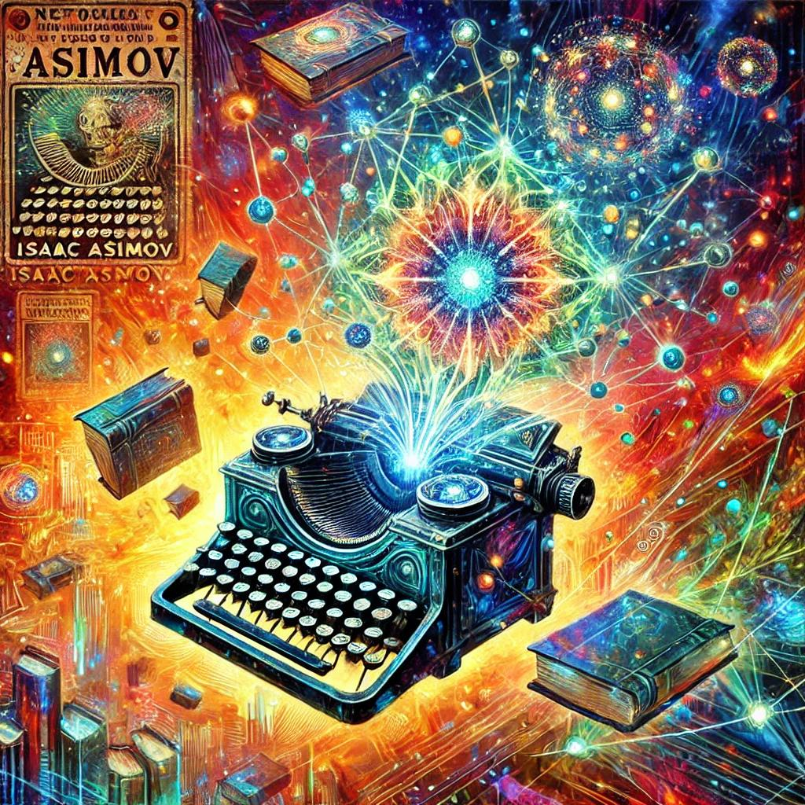

Project Description
This project explores the creative possibilities of combinatory procedural text generation, blending eleven eclectic texts from Project Gutenberg with Isaac Asimov’s short story “Let’s Get Together” to craft a unique science fiction narrative. Inspired by discussions on artistic intention, procedural creativity, and genre conventions, the experiment examines how ChatGPT can facilitate complex text transformations while maintaining human creative oversight.
The process began by selecting texts ranging from Craig's Common Diseases of Farm Animals to Keyhoe's Flying Saucers Are Real, with the goal of merging them into a coherent sci-fi story. After pre-processing the texts, ChatGPT was guided step-by-step to combine them into a narrative inspired by mid-20th-century pulp magazines. The process involved both Python-assisted distant reading techniques and AI-driven textual analysis to identify and emulate the genre features of Asimov’s work. Adjustments were made to enhance the narrative’s “Asimovian” qualities, such as adding dialogue tags, descriptive adjectives, and interjections, creating a stylistically appropriate but intentionally exaggerated result.
The experiment didn’t stop at a single story. The combined text served as a springboard for 25 additional micro-stories, procedurally generated by ChatGPT and loosely inspired by Asimov’s themes. While technical challenges arose, particularly in handling longer HTML outputs and cycling micro-stories dynamically, the iterative process highlighted the interplay between procedural randomness and artistic choice. By continually prioritizing intentional selection and curation, the project reflects a broader dialogue about the role of human creativity in AI-driven art.
Procedural Asimov Story Generator
Use the interactive display above to explore the procedural storytelling project.
Tools & Details
Date: September 2024
Tools:
ChatGPT (GPT-4 with Python functionality)
Pre-processed texts from Project Gutenberg
HTML for interactive story display
Python libraries for text processing and transformation